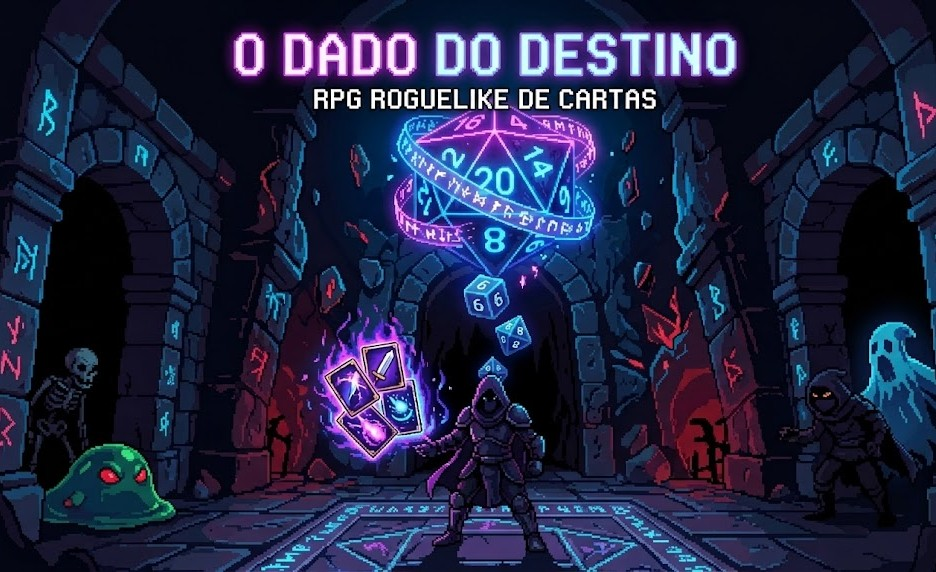

> view_project("Desenvolvimento de Jogos")█

Atualmente, estou explorando essa fronteira através do desenvolvimento de um Roguelike RPG focado em mecânicas de cartas e progressão de personagens. O projeto, criado em colaboração com amigos, desafia nossa capacidade de equilibrar o design procedural onde cada partida é única com uma estratégia profunda. É a união perfeita entre o rigor técnico do software e a criatividade do game design, resultando em um sistema onde cada escolha do jogador impacta diretamente sua jornada.
Os jogos são muito mais do que entretenimento; eles funcionam como laboratórios de inovação onde a lógica de programação, o design de interface e a narrativa se encontram para criar experiências imersivas. Para quem desenvolve, eles representam o desafio supremo de engenharia, exigindo o gerenciamento de estados complexos, inteligência artificial e uma atenção minuciosa à experiência do usuário (UX), transformando conceitos abstratos em sistemas interativos e dinâmicos.